How it fits together
Which part of Atalaia talks to which, over what link, and what travels on it. Under each diagram: what flows, and what does not.
Atalaia is pre-alpha. On real boards, on a bench, these have run: boot, the radio, buttons and a keypad, adoption, an update over the air, and whole games with the field controller. The iOS app has passed its checklist on an iPhone. The rest is built and tested in software only.
Reading the first diagram: a solid line works with no internet at the field, a dashed line needs the internet.
1 · The whole system

What flows
Game traffic stays at the field. Boxes and the controller talk over LoRa through the USB modem. The GM console, the players' app, the Android props and the files a box fetches all use the field's own Wi-Fi.
What does not flow
- Nothing in a game waits for the internet. The site server is optional.
- Players' positions never go over LoRa or MQTT.
- The site server never connects to the controller: the controller always opens the connection.
- Boxes never talk to the internet. The controller fetches modes, and a person uploads firmware.
2 · The radio layers

What flows
Every packet is encrypted and checked with AES-128-CCM under the game's key. The modem seals and opens the packets, so the controller and the modem speak plain frames over the cable. Boxes repeat each other's packets.
What does not flow
- No positions, names, tokens, Wi-Fi passwords, firmware images or mode packages go over LoRa.
- Large files are fetched over HTTPS. Only a short offer or a failure report uses LoRa.
3 · A game, from the invite to the end


What flows
A free box announces itself and the GM invites it. The join payload (game id and key, role, teams, channel) arrives sealed. The game starts only when every role has a box. Boxes then send events, and a STATE every 15 s.
What does not flow
- The GM console never speaks LoRa: it talks only to the controller.
- The game key travels only inside the sealed invite (or on a card), never in an announcement.
4 · Players on game day


What flows
A player scans the poster, pins the field's CA, checks in and gets a token. The app then follows the live stream. A marshal signs chrono readings on their own phone.
What does not flow
- Positions never go over LoRa or MQTT, and never reach players of other roles.
- No internet is needed: all of this works with the site server off.
5 · Controller and site server


What flows
The controller pushes games, events, scores, nodes and chrono records every 30 s in a game and every 5 min between games. It pulls schedules, rosters and settings. A stream carries the live view and the remote GM's commands, which the controller checks again.
What does not flow
- The site server never connects to the controller and never holds the game key, the join key or tokens.
- Offline is normal: events wait and are sent in order later.
- Positions leave the controller only in two opt-in cases (remote GM, remote ATAK relay), in memory.
6 · Getting things onto a box

What flows
Release and mode keys sign the files, and their public halves are built into the box. A person downloads the signed firmware and uploads it to the controller. The controller offers the update over LoRa and the box fetches it over the field's Wi-Fi. A box is adopted by USB cable, NFC card or pairing code.
What does not flow
- The signature, not the channel, makes a file safe: the box decides, with the keys in its own firmware, before it writes a byte.
- The controller never downloads firmware from GitHub.
- Release keys and mode keys are separate keys.
7 · Login and accounts on the site server

What flows
A short-lived access token plus a refresh token that is replaced at every use. Staff roles count only in a session with a second factor (TOTP or a passkey). A social login alone is not a second factor.
What does not flow
- The controller does not use these accounts: it uses the field's API key.
- A social provider is contacted only by the person's browser and the site server, never by a controller, a box or a modem.